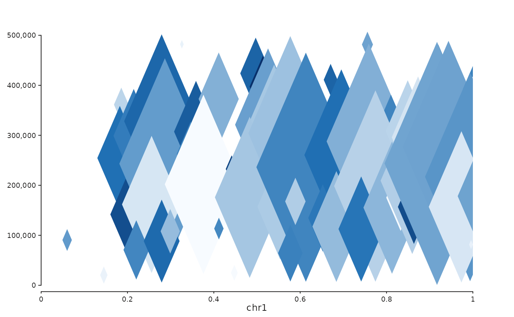

Builds a seq_plot() rendering a Hi-C contact matrix in one of four
styles:
"full"Symmetric square heatmap with genomic position on both x- and y-axes.
"diagonal"Same coordinate system as
"full"(kept as a separate keyword so call sites can switch styles without changing shape)."triangle"Rotated 45 degrees; upper triangle only, y-axis is interaction distance in base pairs.
"rectangle"Same rotation as
"triangle", but y-axis is capped atmax_dist, yielding a rectangle.
Usage
seq_hic(
data,
windows,
style = "triangle",
max_dist = NULL,
palette = "blues",
na_color = "#FFFFD9",
y_windows = NULL,
combine_windows = FALSE,
combine_y_windows = FALSE,
flip_x = FALSE,
flip_y = FALSE,
track_height = 1,
track_id = NULL,
legend = NULL,
show_legend = TRUE,
...
)Arguments
- data
Sparse
GRanges(mcols:i_start,i_end,j_start,j_end,score) or a numeric matrix / data.frame whose row/column names encode bin positions. Each row must describe a well-formed contact wherei_end - i_startandj_end - j_startboth equal the Hi-C bin width (they define the tile's footprint on the position and distance axes). For cross-chromosomal contacts, include an optionalj_chrommcols column giving the j-bin's chromosome (the GRanges'sseqnamesis taken to be the i-bin's chromosome). When absent, both bins are assumed to live on the same chromosome.- windows
GRangesdefining the genomic region(s) to display on the x-axis. Multiple ranges produce side-by-side panels (one per range), useful for comparing several regions.- style
One of
"full","diagonal","triangle","rectangle". Default"triangle".- max_dist
For
style = "rectangle"only: cap the distance axis at this value (bp). Required for"rectangle".- palette
Colour scale palette for the tile fill. Passed to
seq_scale_color_continuous().- na_color
Colour for zero/NA contacts.
- y_windows
Optional
GRangesfor the genomic y-axis range in"full"/"diagonal"styles. Defaults towindows(square matrix). Pass a differentGRangesto display an asymmetric region pair. Ignored for rotated styles.- combine_windows
Logical; when
TRUE, multi-regionwindowsare concatenated into a single virtual track so cross-window data (e.g. inter-chromosomal contacts) renders continuously in one panel. DefaultFALSE.- combine_y_windows
Symmetric to
combine_windowsfor multi-regiony_windowsin thefull/diagonalstyles.- flip_x, flip_y
Logical. Mirror the x or y axis. For the
trianglestyleflip_y = TRUEproduces a downward-pointing triangle; fordiagonalit switches to the lower diagonal; forfullit flips the matrix vertically (y) or horizontally (x). Tick labels follow the same orientation. DefaultFALSE.- track_height
Relative track height.
- track_id
track_idfor the generated track. Defaults topaste0("hic_", style).- legend
A
LegendKeyorSeqLegendSpecforwarded to the tile element.NULL(default) produces no legend entry.- show_legend
Logical. When
FALSE, the tile element contributes no legend. DefaultTRUE.- ...
Additional arguments forwarded to
seq_track().
Details
To show multiple styles side-by-side, call seq_hic() multiple times
and combine via seq_resolve() or %|%.
Examples
library(GenomicRanges)
set.seed(1)
n <- 80
st <- sort(sample(seq(1, 1e6, by = 1e4), n))
gr <- GRanges("chr1", IRanges(st, width = 1e4),
i_start = st, i_end = st + 1e4,
j_start = st + sample(0:5e5, n, replace = TRUE),
j_end = st + sample(0:5e5, n, replace = TRUE) + 1e4,
score = rexp(n, rate = 0.5))
win <- GRanges("chr1", IRanges(1, 1e6))
seq_hic(gr, windows = win, style = "triangle")
